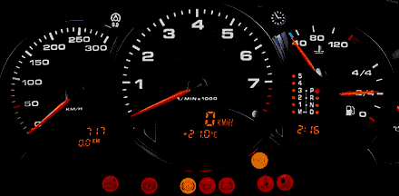

Al abordar un automóvil, se puede observar un tablero con múltiples indicadores que permiten al conductor monitorear el estado del vehículo. Entre ellos se encuentran el nivel de combustible, la temperatura del motor, el estado de la batería, la señalización de puertas abiertas, la velocidad a la que se viaja, y los indicadores de luces estacionarias o de giro, entre otros. Estos elementos proporcionan información esencial que permite tomar decisiones de manera oportuna.
Todos estos indicadores son el resultado de datos sintetizados mediante diferentes métodos, con el objetivo de presentar información relevante de forma clara y comprensible para el conductor.

De manera similar a la situación descrita anteriormente, cuando nos enfrentamos al análisis de datos, es necesario resumirlos utilizando indicadores, tablas y gráficos que permitan una interpretación más sencilla y clara. Por ejemplo, en el caso de los datos cuantitativos, las tablas de frecuencia son herramientas útiles para identificar el valor con mayor frecuencia (el valor más repetido), conocido como Moda.
Para las variables cuantitativas, existe una variedad de indicadores que facilitan su caracterización y análisis. Estos se agrupan en las siguientes categorías principales:
Indicadores de posición: Ayudan a determinar la ubicación relativa de los valores dentro del conjunto de datos (como percentiles y cuartiles).
Indicadores de centro: Describen el valor central o representativo de los datos (como la media, mediana y moda).
Indicadores de dispersión o variabilidad: Evalúan la dispersión de los datos en torno a su centro (como la varianza, desviación estándar y rango intercuartílico).
Indicadores de forma: Analizan la distribución de los datos, considerando su asimetría y curtosis.
Estos indicadores, en conjunto, proporcionan una base sólida para comprender las características fundamentales de los datos y tomar decisiones informadas a partir de ellos.
Los indicadores de posición son medidas que dividen un conjunto de datos en partes iguales, permitiendo localizar un valor específico dentro de una distribución. Los indicadores más conocidos son:
Deciles: Dividen los datos en 10 partes iguales.
Cuartiles: Dividen los datos en 4 partes iguales.
Quintiles: Dividen los datos en 5 partes iguales.
Percentiles: Dividen los datos en 100 partes iguales.
Cada indicador se utiliza para analizar y comprender cómo se distribuyen los datos, permitiendo identificar posiciones específicas dentro de la población o muestra. A continuación, se presenta una descripción detallada de cada uno de estos indicadores.
Los percentiles son 99 valores que dividen los datos en cien partes iguales, cada una de las cuales contiene el 1% de las observaciones. Estos valores están representados como \(P_1, P_2, P_3, P_4, \dots, P_{99}\), donde cada percentil indica el punto debajo del cual se encuentra un porcentaje específico de los datos.
Por ejemplo:
El percentil \(P_{25}\) corresponde al primer cuartil, el 25% de los datos es menor o igual a este valor.
El percentil \(P_{50}\) coincide con la mediana, dividiendo los datos en dos mitades iguales, el 50% de los datos es menor o igual a este valor.
Los deciles son 9 valores que dividen la muestra en 10 partes iguales, cada una de las cuales contiene el 10% de las observaciones. Estos valores están representados como \(D_1, D_2, D_3, D_4, \cdots, D_9\), y permiten identificar puntos específicos en la distribución de los datos que facilitan su interpretación.
Por ejemplo:
El decil \(D_1\) marca el punto por debajo del cual se encuentra el 10% de los datos.
El decil \(D_5\) coincide con la mediana, dividiendo la muestra en dos mitades iguales.
Los cuartiles son 3 valores que dividen la muestra en cuatro partes iguales, cada una de las cuales contiene el 25% de los datos. Estos valores se denotan como:
\(Q_1\) (primer cuartil): El valor por debajo del cual se encuentra el 25% de los datos.
\(Q_2\) (segundo cuartil): También conocido como la mediana, que divide los datos en dos mitades iguales.
\(Q_3\) (tercer cuartil): El valor por debajo del cual se encuentra el 75% de los datos.
Además de ser indicadores fundamentales para describir la distribución de los datos, los cuartiles son utilizados para construir el diagrama de cajas (boxplot). Este gráfico no solo permite comparar grupos de manera visual, sino que también facilita la identificación de datos atípicos, proporcionando una herramienta valiosa en el análisis exploratorio de datos.
Identificación de valores atípicos: Los percentiles son herramientas efectivas para detectar valores extremos o atípicos en un conjunto de datos. Un método comúnmente utilizado para este propósito se basa en los cuartiles y los rangos intercuartílicos (IQR, por sus siglas en inglés). Los límites para identificar valores atípicos se calculan como:
\[ \text{Límite inferior} = Q_1 - 1.5 \times (\text{IQR}) \] \[ \text{Límite superior} = Q_3 + 1.5 \times (\text{IQR}) \]
Donde:
\(Q_1\): Primer cuartil (percentil 25).
\(Q_3\): Tercer cuartil (percentil 75).
\(\text{IQR} = Q_3 - Q_1\): Rango intercuartílico.
Los valores que caen fuera de estos límites se consideran atípicos. Este enfoque fue propuesto por John Tukey en 1977 y se utiliza ampliamente en análisis exploratorio de datos.
Análisis de rendimiento en pruebas estandarizadas: En el sector educativo, los percentiles son ampliamente utilizados para informar sobre el rendimiento de los estudiantes en pruebas estandarizadas. Por ejemplo, un puntaje en el percentil 75 indica que el estudiante superó al 75% de los participantes en la prueba, lo que posiciona su desempeño en el cuarto superior del grupo.
Evaluación de distribuciones de ingresos: En economía y sociología, los percentiles se utilizan para analizar la distribución de ingresos. Un enfoque común es el uso de quintiles, que dividen la población en cinco grupos iguales, cada uno representando el 20% de la distribución de ingresos. Estos quintiles corresponden a los percentiles \(P_{20}\), \(P_{40}\), \(P_{60}\), y \(P_{80}\).
Segmentación de audiencia en marketing: En el ámbito del marketing, los percentiles se utilizan para segmentar audiencias según el comportamiento del cliente. Por ejemplo, se pueden calcular percentiles basados en variables como el gasto promedio, la frecuencia de compra o el tiempo de permanencia en una plataforma. Esto permite identificar grupos específicos como:
Clientes premium: Aquellos en los percentiles superiores (\(P_{80}\) o más), que representan el segmento con mayor valor para la empresa.
Clientes frecuentes pero de bajo gasto: Aquellos en percentiles medios (\(P_{40}\) a \(P_{60}\)).
Clientes inactivos o de bajo valor: Aquellos en los percentiles inferiores (\(P_{20}\) o menos).
Evaluación de rendimiento en deportes: En el análisis deportivo, los percentiles se utilizan para evaluar el rendimiento de los atletas en comparación con sus pares en diferentes aspectos, como velocidad, resistencia o fuerza. Por ejemplo:
Un atleta que se encuentra en el percentil 90 en velocidad significa que supera al 90% de los demás atletas en esta categoría.
Un atleta en el percentil 50 en resistencia tiene un rendimiento promedio, igualando a la mitad de los participantes.
Establecimiento de límites para decisiones empresariales: En el ámbito empresarial, los percentiles son útiles para establecer límites o umbrales en la toma de decisiones estratégicas. Por ejemplo, una empresa podría utilizar percentiles para identificar y premiar a los empleados con los mejores desempeños basándose en un indicador de rendimiento específico: Aquellos empleados que se encuentren en el percentil 95 o superior serían reconocidos o recompensados por su alto rendimiento.
Comparación de rendimiento de modelos en aprendizaje automático: En el desarrollo de modelos de aprendizaje automático, los percentiles pueden ser útiles para comparar el rendimiento de diferentes modelos en distintas regiones de la distribución de datos. Por ejemplo:
Evaluar cómo se desempeña cada modelo en los percentiles superiores (\(P_{90}\) o más), donde pueden encontrarse valores extremos o casos atípicos.
Analizar el rendimiento en los percentiles medios (\(P_{40}\) a \(P_{60}\)) para identificar si el modelo tiene un buen ajuste general en datos promedio.
Comparar resultados en los percentiles inferiores (\(P_{10}\) o menos) para determinar la capacidad del modelo de manejar datos con valores bajos o límites críticos.
Determinación de valores críticos en salud: En estudios de salud, los percentiles se utilizan para establecer valores de referencia en medidas biológicas clave, como el índice de masa corporal (IMC), la presión arterial, y otros indicadores fisiológicos. Estos valores permiten clasificar a los pacientes en grupos de riesgo y establecer criterios clínicos.
Por ejemplo:
Un IMC en el percentil 85 se considera un umbral para clasificar a un paciente en riesgo de sobrepeso.
La presión arterial en el percentil 95 puede ser un indicador de hipertensión, requiriendo intervenciones médicas específicas.
En este ejemplo se presentan los códigos en R utilizados para calcular la mediana, los cuartiles, quintiles, deciles y algunos percentiles específicos (10, 20, 25, 30, 40, 50, 60, 70, 75, 80, 90) correspondientes a los precios (en millones) registrados de una muestra de viviendas en Cali:
# Cargar la librería y los datos
library(paqueteMETODOS)
# Cargar el conjunto de datos con precios de vivienda
data("vivienda_faltantes")
# Extraer la variable de interés (precio en millones)
x <- vivienda_faltantes$preciom
# Mostrar los valores observados (incluyendo posibles NA)
x
# Calcular la mediana sin omitir NA (esto devolverá NA si hay valores faltantes)
mediana_con_na <- median(x)
mediana_con_na # Resultado: NA si existen valores perdidos
# Calcular la mediana ignorando los valores faltantes
mediana_sin_na <- median(x, na.rm = TRUE)
mediana_sin_na
# Calcular cuartiles (25%, 50%, 75%) ignorando NA
cuartiles <- quantile(x, probs = c(0.25, 0.5, 0.75), na.rm = TRUE)
cuartiles
# Calcular quintiles (20%, 40%, 60%, 80%) ignorando NA
quintiles <- quantile(x, probs = c(0.20, 0.40, 0.60, 0.80), na.rm = TRUE)
quintiles
# Calcular deciles (10%, 20%, ..., 90%) ignorando NA
deciles <- quantile(x, probs = seq(0.1, 0.9, by = 0.1), na.rm = TRUE)
deciles
# Calcular percentiles específicos ignorando NA
percentiles_especificos <- quantile(
x,
probs = c(0.10, 0.20, 0.25, 0.30, 0.40, 0.50, 0.60, 0.70, 0.75, 0.80, 0.90),
na.rm = TRUE
)
percentiles_especificos
# Cargar la librería y los datos
library(paqueteMETODOS)
# Cargar el conjunto de datos con precios de vivienda
data("vivienda_faltantes")
# Verificar cuántos valores faltantes hay en 'preciom'
sum(is.na(vivienda_faltantes$preciom))
# Extraer la variable de interés (precio en millones)
x <- vivienda_faltantes$preciom
# Mostrar los valores observados (incluyendo posibles NA)
x
# Calcular la mediana sin omitir NA (esto devolverá NA si hay valores faltantes)
mediana_con_na <- median(x)
mediana_con_na # Resultado: NA si existen valores perdidos
# Calcular la mediana ignorando los valores faltantes
mediana_sin_na <- median(x, na.rm = TRUE)
mediana_sin_na
# Calcular cuartiles (25%, 50%, 75%) ignorando NA
cuartiles <- quantile(x, probs = c(0.25, 0.5, 0.75), na.rm = TRUE)
cuartiles
# Calcular quintiles (20%, 40%, 60%, 80%) ignorando NA
quintiles <- quantile(x, probs = c(0.20, 0.40, 0.60, 0.80), na.rm = TRUE)
quintiles
# Calcular deciles (10%, 20%, ..., 90%) ignorando NA
deciles <- quantile(x, probs = seq(0.1, 0.9, by = 0.1), na.rm = TRUE)
deciles
# Calcular percentiles específicos ignorando NA
percentiles_especificos <- quantile(
x,
probs = c(0.10, 0.20, 0.25, 0.30, 0.40, 0.50, 0.60, 0.70, 0.75, 0.80, 0.90),
na.rm = TRUE
)
percentiles_especificosLos resultados obtenidos tras la ejecución del código son los siguientes:
> sum(is.na(vivienda_faltantes$preciom)) [1] 2 > mediana_con_na # Resultado: NA si existen valores perdidos [1] 330 > mediana_sin_na <- median(x, na.rm = TRUE) > mediana_sin_na [1] 330 > cuartiles <- quantile(x, probs = c(0.25, 0.5, 0.75), na.rm = TRUE) > cuartiles 25% 50% 75% 220 330 540 > quintiles <- quantile(x, probs = c(0.20, 0.40, 0.60, 0.80), na.rm = TRUE) > quintiles 20% 40% 60% 80% 190 285 390 610 > deciles <- quantile(x, probs = seq(0.1, 0.9, by = 0.1), na.rm = TRUE) > deciles 10% 20% 30% 40% 50% 60% 70% 80% 90% 145 190 240 285 330 390 475 610 870 > percentiles_especificos 10% 20% 25% 30% 40% 50% 60% 70% 75% 80% 90% 145 190 220 240 285 330 390 475 540 610 870
A partir de los resultados obtenidos para la variable preciom, se puede concluir lo siguiente:
Existen 2 valores faltantes (NA) en
la variable, lo cual debe tenerse en cuenta al calcular medidas
estadísticas como la mediana o los percentiles.
La mediana indica que el 50% de las viviendas en la muestra tienen un precio igual o inferior a 330 millones.
Los cuartiles, que dividen el conjunto de datos en cuatro partes iguales, muestran que:
El 25% de las viviendas tienen precios de hasta 220 millones (primer cuartil, Q1).
El 50% tienen precios iguales o inferiores a 330 millones (segundo cuartil, Q2 o mediana).
El 75% de las viviendas tienen precios iguales o menores a 540 millones (tercer cuartil, Q3).
Los quintiles, que dividen los datos en cinco partes, indican que:
El 20% de las viviendas tienen precios de hasta 190 millones (primir quintil).
El 40% tienen precios de hasta 285 millones (segundo quintil).
El 60% no superan los 390 millones (tercer quintil).
El 80% de las viviendas tienen precios de hasta 610 millones (cuarto quintil).
De forma similar, los deciles dividen el conjunto en diez partes iguales. Por ejemplo:
El 10% de las viviendas tienen precios de hasta 145 millones (decil 1).
El 90% tienen precios iguales o inferiores a 870 millones (decil 9), lo que permite identificar la magnitud de los valores altos.
También se calcularon varios percentiles clave, los cuales representan el valor debajo del cual se encuentra un determinado porcentaje de los datos. Algunos ejemplos:
El percentil 10 (igual al decil 1) indica que el 10% de los precios son menores o iguales a 145 millones.
El percentil 20 (decil 2) señala que el 20% de los precios no superan los 190 millones.
El percentil 25 (equivalente al primer cuartil, Q1) indica que el 25% de los precios son iguales o están por debajo de 220 millones.
El percentil 50, correspondiente a la mediana o segundo cuartil (Q2), muestra que el 50% de las viviendas tienen precios de hasta 330 millones.
El percentil 75 (igual al tercer cuartil, Q3) indica que el 75% de los precios son iguales o inferiores a 540 millones.
¿Qué percentil o cuantil usar en un informe estadístico?
La elección de percentiles o cuantiles en un informe estadístico depende del objetivo del análisis y del nivel de detalle requerido para describir la distribución de los datos:
Para una descripción general, se suelen utilizar los cuartiles (25%, 50%, 75%).
Si se desea mayor granularidad, los deciles (división en diez partes) o los percentiles (división en cien partes) permiten observar la concentración de datos en tramos más específicos, lo que es útil, por ejemplo, para evaluar desigualdades o para establecer umbrales de clasificación.
En estudios comparativos o diagnósticos, es común reportar los percentiles 10, 25, 50, 75 y 90, ya que permiten visualizar la dispersión y simetría de los datos, así como detectar valores extremos.
En contextos normativos o educativos (como pruebas estandarizadas), se utilizan percentiles para posicionar observaciones dentro de un grupo de referencia.
- Es recomendable revisar el área de investigación y estudios previos para identificar qué percentiles suelen reportarse comúnmente. Esto permite mantener coherencia con investigaciones anteriores y facilita la comparación de resultados. Con base en esa revisión, se pueden calcular los percentiles adecuados según el estándar del campo de estudio o el enfoque del análisis.
- En la redacción de informes estadísticos, no es recomendable presentar una lista de percentiles y sus valores numéricos sin contexto, por ejemplo: La mediana es 330 millones. El decil 1 es 145 millones. El percentil 90 es 870 millones. En lugar de eso, los resultados deben ser integrados e interpretados dentro del contexto del problema. Por ejemplo: “El 50% de las viviendas analizadas tienen precios iguales o inferiores a 330 millones de pesos”. Este enfoque narrativo permite dar sentido a los resultados y comunicar hallazgos relevantes de forma comprensible para quienes toman decisiones o analizan el fenómeno estudiado.